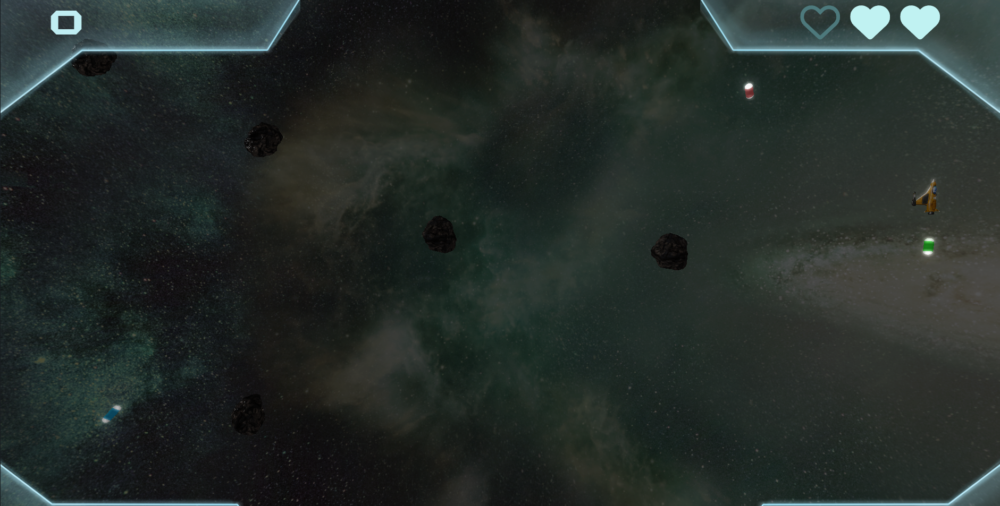

Le projet noté de SIA consiste à développer un clone 3D du jeu Asteroid. Le jeu devra tourner dans un navigateur Web et sera constitué de primitives graphiques 3D animées. La principale contrainte logicielle est de s'appuyer sur la bibliothèque Three.js.
Introduction :
Implementation du cahier des charges :
Déroulement du jeu :
Dans Asteroid_3D, traversé un large ensemble de 3 niveaux aux particularités différentes et de plus en plus difficiles afin de mettre au defi vos compétences de pilote ! Passer d'un niveau au cœur des zones les plus sombres de l'espace aux endroits les plus meurtriers où il vous faudra adresse et concentration afin d'en ressortir vivant. En cas d'échec, n'abandonnez pas ! Il vous sera facilement possible de recommencer une partie. Attention, les objets ne seront pas au même endroit.


Technologie logicielles :
L'utilisation de Three.js offre des possibilités diverses afin d'offrir une experience fluide et esthétique dans les innovants niveaux du jeu.
Fenetre graphique 3D :
Un mode plein écran vous est proposé avec la touche "f", pour une immersion totale ainsi qu'un mode capture d'écran avec la touche "p" afin de sauvegarder vos exploits. Il vous est fourni une adaptation dynamique automatique de l'écran à tous les formats.
Architecture logicielle :
L'implémentation à l'aide du modèle MVC (modèle vue contrôler) propose un code lisible et simple à embellir avec de nouvelles fonctionnalités, ce qui a permis dès le début du projet d'avoir une simplicité d'implémentation des différents aspects techniques du jeu et à permis de moins se concentrer sur l'aspect architecture et de fournir plus d'effort sur le gameplay.
Graphisme :
L'utilisation de modèles 3D riches et détaillés au format ".obj" et ".mtl" on permit d'avoir un contrôle précis sur les différentes propriétés des textures de plus un travaille sur le postprocessing permet une intégration réaliste dans l'environnement 3D afin de vous proposer une expérience visuelle et animée à coupé le souffle.

Dialogues avec l'utilisateur :
Vous aurez une interface dynamique et esthétique respectant les codes du genre pour une prise en main rapide et un design se mariant au jeu. La puissance du langage "css" a permit une intégration simple et rapide des différents éléments de l'interface tout en apportant une possibilité d'implémenté tout un tas d'animations varié. Les messages visuels sont accompagnés de message audio afin de ne louper aucune information ! Malgré tout cela, vous êtes perdu ? Ne vous en fait pas ! L'appui sur la touche "h" vous offre un récapitulatifs des différentes commandes du jeu !


Points de vue caméra :
Trois points de vue de la camera vous seront disponible. Un fixe, et 2 suiveuses que vous pourrez changer à chaque instant sur les touches "0", "1" et "2"!
Gestion des collisions :
Un système de collision basé sur la physique du monde réel adapté au besoin du jeu tel que la conservation de la vitesse et de la rotation offre une expérience de jeux plus intéressante. Le calcul des collisions est fait à l'aide de bounding box et de bounding sphère donne une précision suffisante pour le jeu.
Dynamique :
Chaque objet en plus des propriétés de base tel que la rotation, la position et l'echele possèdent une propriété en plus, la vitesse. Elle permet à chaque objet de s'orienter sans affecter sa vitesse ni la direction où il se dirige. Le plateau de jeu étant periodique un objet sortant du champ de vision de la camera se retrouve téléporté à l'opposé en fonction de l'axe du bord qu'il a dépassé. Il a été décidé d'améliorer l'idée de l'augmentation de la vitesse des astéroïdes et des missiles ennemies par une difficulté croissante dans le niveau.
Jokers :
Afin de vous aider dans votre périple, il vous sera possible d'attraper des jokers apparaissant au fur et à mesure du niveau, mais attention, ils disparaissent rapidement. Les différents bonus disponibles sont :
- Vie supplémentaire,
- Tir rapide,
- Dématérialisation,
- Bouclier répulsif.


Musique et sons :
Asteroid_3D possède des thèmes musicaux et des effets sonore unique conçus spécialement pour ce jeu et réalisé par une étudiante dans le domaine de la musique.
Triche :
Un système de triche vous est proposé dans le cadre de test la touche "i" pour devenir invincible, la touche "j" pour faire apparaître un joker et la touche "k" afin de terminer le niveau.
Les petits plus :
Revivez les moments forts du jeu vidéo avec ce classique revisité avec des graphismes et des technologies modernes. Parcourez les différents niveaux au péril de votre vie. Ce titre vous offrira le challenge des jeux rétro, mais vous offrira une diversité nouvelle et innovante. Les thèmes musicaux revus pour ce titre vous entraîneront dans son univers.